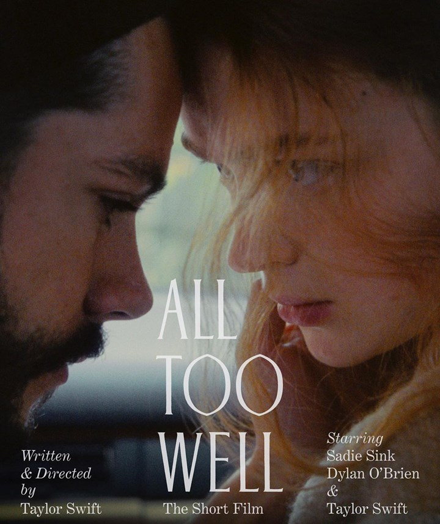

For more intersting music videos, follow Taylor Swift Music World
The Secret Easter Eggs and Themes Inside ‘All Too Well: The Short Film’
Swifties lost their minds when the 10-minute version "from the vault" was announced, then went wild again when it actually dropped last week. Not only is the song much longer, it features a number of new lyrics that pretty much prove what we’ve been saying all along: this song is about Jake Gyllenhaal. We’ll talk about that more in a minute. The re-release is also important because it’s a “Taylor’s Version”, meaning she actually owns this version of the track. The original recording from the 2012 version of Red currently belongs to Shamrock Holdings, an American private equity firm owned by the Disney estate, after Scooter Braun sold the masters to Taylor’s first six albums in 2020. In a bid to finally own her own work, which many music artists sadly don’t, Taylor announced she’d be re-recording and releasing her first six albums. She started with Fearless (Taylor’s Version) and followed up with Red (Taylor’s Version), both in 2021.
The re-release is also important because it’s a “Taylor’s Version”, meaning she actually owns this version of the track. The original recording from the 2012 version of Red currently belongs to Shamrock Holdings, an American private equity firm owned by the Disney estate, after Scooter Braun sold the masters to Taylor’s first six albums in 2020.
In a bid to finally own her own work, which many music artists sadly don’t, Taylor announced she’d be re-recording and releasing her first six albums. She started with Fearless (Taylor’s Version) and followed up with Red (Taylor’s Version), both in 2021.
Alright, let’s get into the juicy stuff. Taylor has said that she wrote most of the lyrics to the 10-minute version of All Too Well years ago, when she penned the original track. While some seem like more recent additions, like specific lines about her age, the new version of the song features some especially raw lyrics Taylor chose not to include on the 2012 track.
The first change is in the second verse, where Tay sings:
“And you were tossing me the car keys, ‘f--k the patriarchy’
Key chain on the ground, we were always skipping town
And I was thinking on the drive down, any time now
He's gonna say it's love, you never called it what it was
'Til we were dead and gone and buried
Check the pulse and come back swearing it's the same
After three months in the grave
And then you wondered where it went to as I reached for you
But all I felt was shame and you held my lifeless frame”
First of all, ouch. Second of all, these lines seem to tie into a pretty popular fan theory that Jake tried to rekindle his and Taylor’s romance a few months after initially calling things off in 2011. Though the theory doesn’t have much evidence to back it up, it wouldn’t be the first time Tay has sung about an ex trying to come crawling back - We Are Never Ever Getting Back Together, Anyone? And yep, that one hurts too! It’s believed these lines refer to Taylor’s ex (looking at you Jake) wanting to keep their relationship a secret, while she was totally committed to the romance.
One of the biggest changes in the 10-minute version is after the bridge, where Taylor just goes in on her ex with these emotionally charged lines:
“They say all's well that ends well, but I'm in a new Hell
Every time you double-cross my mind
You said if we had been closer in age maybe it would have been fine
And that made me want to die
The idea you had of me, who was she?
A never-needy, ever-lovely jewel whose shine reflects on you
Not weeping in a party bathroom
Some actress asking me what happened, you
That's what happened, you
You who charmed my dad with self-effacing jokes
Sipping coffee like you're on a late-night show
But then he watched me watch the front door all night, willing you to come
And he said, ‘It's supposed to be fun turning twenty-one’”
If you weren’t crying already, this would be the section of the song that really turns the waterworks on. It’s also the section that fans believe proves the song is about Jake Gyllenhaal, specifically because of the references to an age gap and a birthday party. There’s a nine-year age gap between Jake and Taylor, who were 29 and 20 respectively when they dated – hence the line about being “closer in age”.
It’s also a widely held belief among fans that Taylor knew the romance with Jake was over when he skipped her 21st birthday party, which would have been in December of 2010, right before the pair split. Not only did that experience (allegedly) inspire the track The Moment I Knew, it also seems to have inspired the lines in the new version of All Too Well about watching the door all night as the narrator turns 21.
Did we mention that Jake, who is 40, is currently dating a 25-year-old? And that he was photographed with her in Brooklyn in 2010? And that she and Jake are both fire signs, hence the whole “twin flame” thing? Okay, maybe that last one is a bit questionable, but the rest of the evidence stands. If there were any doubts about All Too Well being written about Jake Gyllenhaal, the 10-minute version has well and truly put them to bed.